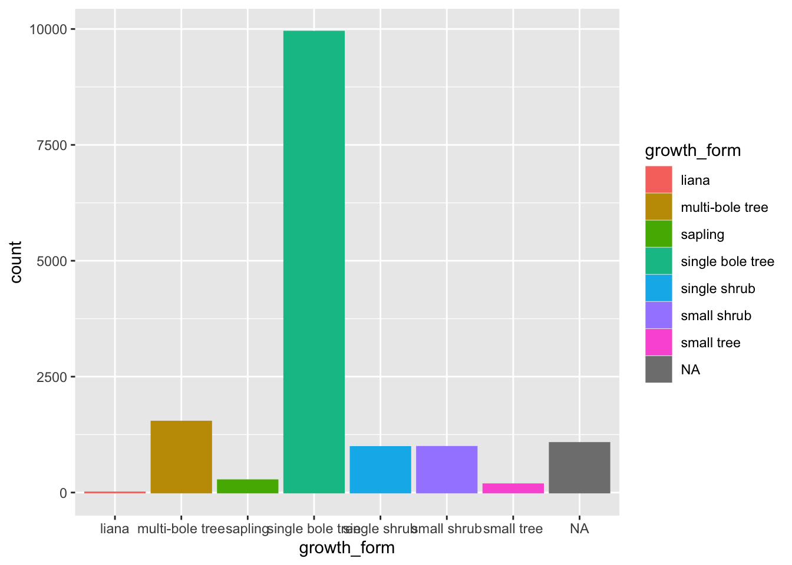

Graphics in R
The R language has extensive graphical capabilities.
Graphics in R may be created by many different methods including base graphics and more advanced plotting packages such as lattice.

Rstudio & R Notebooks
RStudio provides an excellent interactive environment to analyse and visualise data. ensure you have version > 1.0 installed. Download latest version here.
In particular we’ll be using R Notebooks, an interactive Rmd format similar to a Jupyter notebook.
Let’s open Rstudio and create an R Notebook
ggplot2
The ggplot2 package was created by Hadley Wickham and provides an intuitive plotting system to rapidly generate publication quality graphics.
ggplot2 builds on the “Grammar of Graphics”


Geoms - Plot types
As we have seen, an important element of a ggplot is the geom used. Following the specification of data, the geom describes the type of plot used.
Several geoms are available in ggplot2:-
geom_point()- Scatter plotsgeom_line()- Line plotsgeom_smooth()- Fitted line plotsgeom_bar()- Bar plotsgeom_boxplot()- Boxplotsgeom_jitter()- Jitter to plotsgeom_histogram()- Histogram plotsgeom_density()- Density plotsgeom_text()- Text to plotsgeom_errorbar()- Errorbars to plotsgeom_violin()- Violin plots

colour mapping


themes
mtcars %>%
ggplot(aes(x = mpg, y = hp, fill = as.factor(cyl))) +
geom_point(shape = 21) +
theme_minimal()  ##
## mtcars example
mtcars %>%
ggplot(aes(x = mpg, y = hp, fill = as.factor(cyl))) +
geom_point(shape = 21) +
theme_minimal() 
## Parsed with column specification:
## cols(
## .default = col_character(),
## date = col_date(format = ""),
## stem_diameter = col_double(),
## measurement_height = col_double(),
## height = col_double(),
## point_id = col_double(),
## stem_distance = col_double(),
## stem_azimuth = col_double(),
## decimal_latitude = col_double(),
## decimal_longitude = col_double(),
## easting = col_double(),
## northing = col_double(),
## elevation = col_double(),
## elevation_uncertainty = col_double(),
## stem_lat = col_double(),
## stem_lon = col_double()
## )## See spec(...) for full column specifications.Exploratory Data Analysis
## Warning: Removed 1346 rows containing non-finite values (stat_density).
## Warning: Removed 1346 rows containing non-finite values (stat_density).
## Warning: Removed 1711 rows containing non-finite values (stat_density).
## Warning: Removed 1711 rows containing non-finite values (stat_density).
## Warning: Removed 1711 rows containing non-finite values (stat_density).
individual %>%
ggplot(aes(x = height, group = growth_form, colour = growth_form, fill = growth_form)) +
geom_density(alpha = 0.5, trim = TRUE)## Warning: Removed 1711 rows containing non-finite values (stat_density).
individual %>%
ggplot(aes(x = height, group = growth_form, colour = growth_form, fill = growth_form)) +
geom_density(alpha = 0.5, trim = T) +
facet_wrap(~growth_form)## Warning: Removed 1711 rows containing non-finite values (stat_density).
individual %>%
ggplot(aes(y = log(height), x = growth_form, colour = growth_form, fill = growth_form)) +
geom_violin(alpha = 0.5, trim = T) +
geom_boxplot(alpha = 0.7)## Warning: Removed 1711 rows containing non-finite values (stat_ydensity).## Warning: Removed 1711 rows containing non-finite values (stat_boxplot).
individual %>%
ggplot(aes(y = log(stem_diameter), x = growth_form, colour = growth_form, fill = growth_form)) +
geom_violin(alpha = 0.5, trim = T) +
geom_boxplot(alpha = 0.7)## Warning: Removed 1346 rows containing non-finite values (stat_ydensity).## Warning: Removed 1346 rows containing non-finite values (stat_boxplot).
individual %>%
ggplot(aes(x = height, y = stem_diameter, group = growth_form, colour = growth_form, fill = growth_form)) +
geom_point(alpha = 0.2) +
facet_wrap(~growth_form)## Warning: Removed 2617 rows containing missing values (geom_point).
##
## Call:
## lm(formula = log(stem_diameter) ~ log(height), data = individual)
##
## Coefficients:
## (Intercept) log(height)
## 0.6197 0.9250individual %>%
ggplot(aes(x = log(height), y = log(stem_diameter), colour = growth_form)) +
geom_point(alpha = 0.2) +
geom_smooth(method = "lm")## `geom_smooth()` using formula 'y ~ x'## Warning: Removed 2617 rows containing non-finite values (stat_smooth).## Warning: Removed 2617 rows containing missing values (geom_point).
##
## Call:
## lm(formula = log(stem_diameter) ~ log(height) * growth_form,
## data = individual)
##
## Coefficients:
## (Intercept)
## 1.34656
## log(height)
## 0.63654
## growth_formsapling
## -0.93628
## growth_formsingle bole tree
## 0.21795
## growth_formsingle shrub
## -1.84901
## growth_formsmall shrub
## -0.90450
## growth_formsmall tree
## -1.15919
## log(height):growth_formsapling
## -0.32744
## log(height):growth_formsingle bole tree
## -0.06054
## log(height):growth_formsingle shrub
## 0.56667
## log(height):growth_formsmall shrub
## -0.24543
## log(height):growth_formsmall tree
## 0.31585individual %>%
ggplot(aes(x = log(height), y = log(stem_diameter), group = growth_form, colour = growth_form, fill = growth_form)) +
geom_point(alpha = 0.2) +
geom_smooth(method = "lm") ## `geom_smooth()` using formula 'y ~ x'## Warning: Removed 2617 rows containing non-finite values (stat_smooth).## Warning: Removed 2617 rows containing missing values (geom_point).